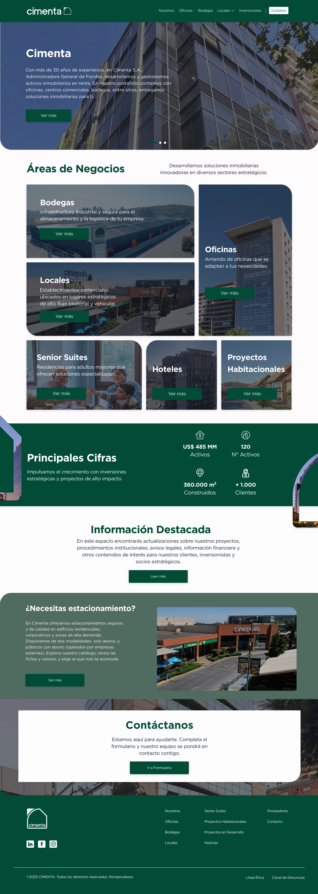
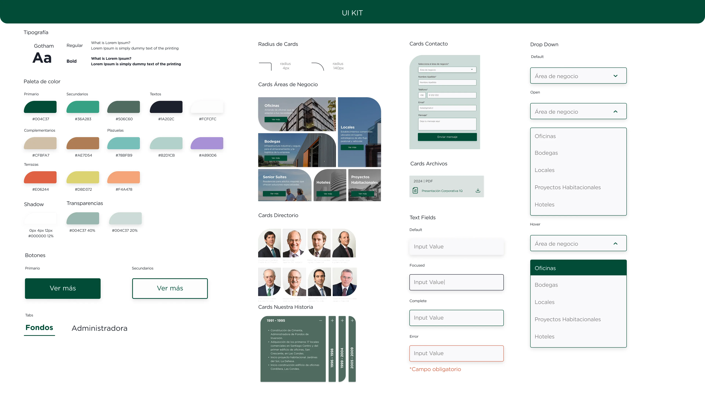
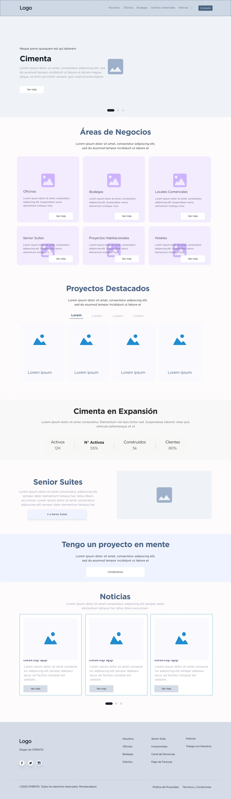
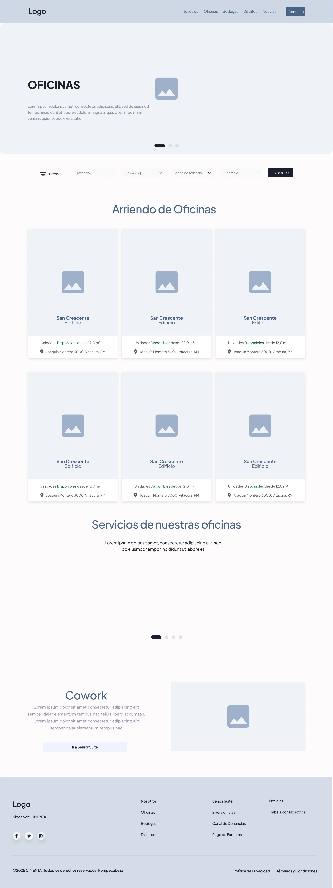
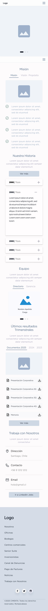
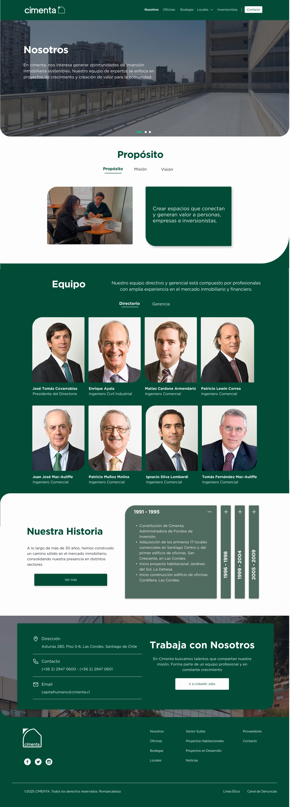
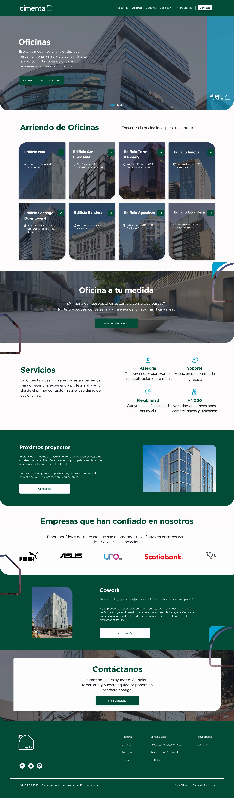
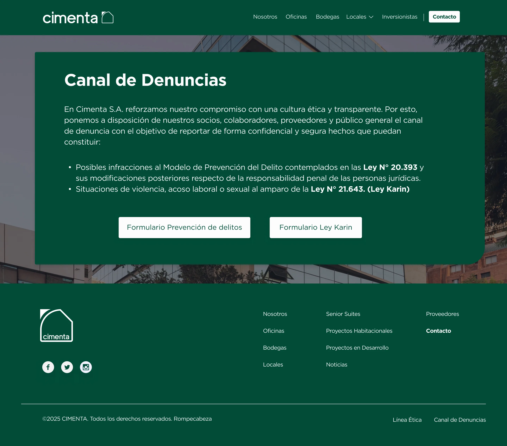
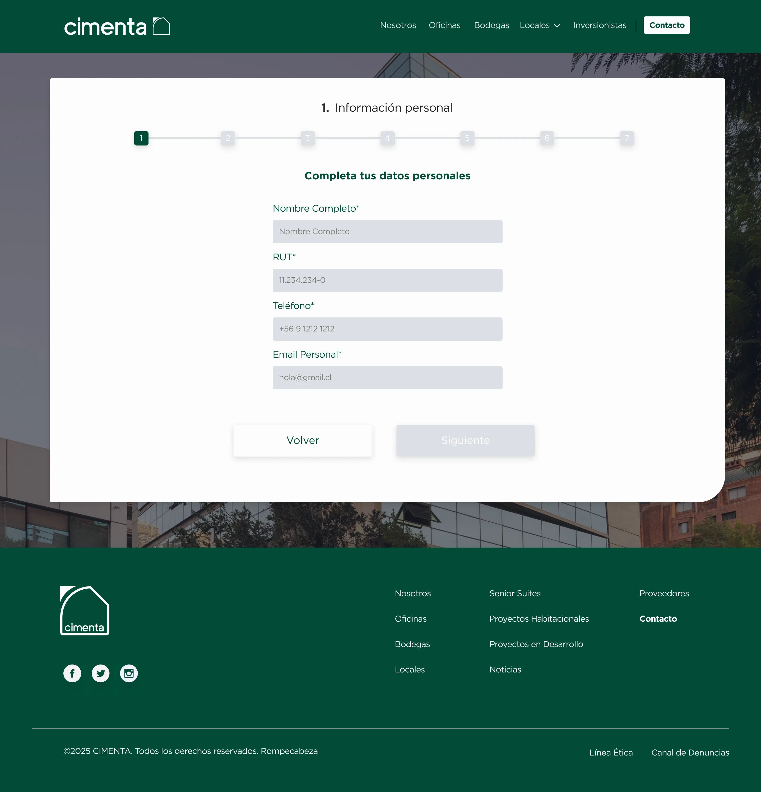
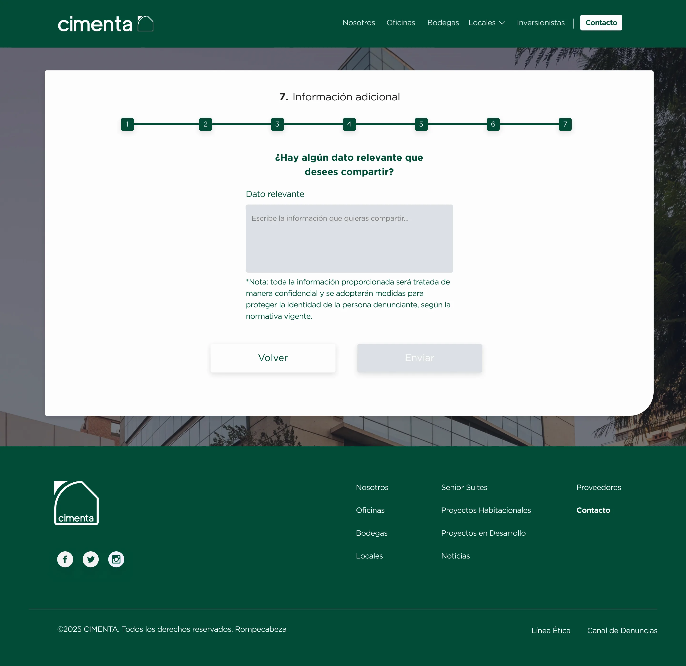

Contexto
Descripción del encargo
El proyecto consistió en el rediseño completo del sitio web de Cimenta, inmobiliaria con distintas líneas de negocio en el sector residencial. El objetivo principal fue modernizar la experiencia digital de la marca, optimizar la navegación y estructurar una arquitectura clara que permitiera escalar el ecosistema digital hacia sus diferentes áreas de negocio. El desafío contemplaba mejorar la usabilidad, actualizar la identidad visual en entorno digital y generar una experiencia coherente tanto en desktop como en mobile.
Antes / Después

Sitio anterior. Diez secciones compitiendo por espacio en el menú.

Sitio rediseñado. Locales agrupa a Plazuela y Terrazas San Cristóbal.
Análisis
El proyecto comenzó con una etapa de análisis estratégico y benchmark del rubro inmobiliario, revisando referentes nacionales e internacionales. Se evaluaron estructuras de navegación, sistemas de búsqueda, jerarquía de información y tendencias visuales. Este análisis permitió detectar oportunidades de mejora en la arquitectura del sitio anterior y definir lineamientos enfocados en simplificar recorridos, ordenar contenidos y reforzar la percepción de marca.
Arquitectura
Se redujo la navegación de diez ítems a seis secciones, agrupando bajo "Locales" las dos líneas de negocio que antes competían por espacio en el menú.
UI Kit
El diseño se desarrolló en Figma, donde se construyó un sistema visual completo desde cero: tipografías, grilla, componentes reutilizables, botones, estados, formularios y tarjetas. Más que diseñar páginas aisladas, el enfoque fue construir un sistema escalable que permitiera mantener coherencia en todo el ecosistema digital, considerando que Cimenta proyectaba expandir sus líneas de negocio en el corto plazo.

UI Kit completo — tipografía, paleta, componentes y estados.
Wireframe
Antes de pasar a alta fidelidad, se trabajó la estructura en baja fidelidad para validar jerarquía de contenidos y flujos de navegación sin la distracción del color o la tipografía final.

Wireframe — Home

Wireframe — Nosotros

Wireframe — mobile
Todo el sistema se diseñó pensando en el responsive desde la etapa de wireframe.
Alta Fidelidad
Una vez definida la estructura, colores y componentes, se empieza a aplicar el diseño en alta fidelidad. Se diseñaron más de 20 páginas distintas, considerando versiones desktop y mobile, y se validaron iterativamente con el cliente para asegurar que la solución respondiera a sus necesidades comerciales y de comunicación. El diseño se enfocó en generar una experiencia moderna, limpia y profesional, alineada con la nueva identidad visual de la marca.

Alta fidelidad — Nosotros

Alta fidelidad — Oficinas
Canal de Denuncias
Se diseñó también el Canal de Denuncias de Cimenta, que da cumplimiento a la Ley 20.393 (Prevención del Delito) y a la Ley Karin. El desafío de UX acá fue distinto al resto del sitio: completar un formulario sensible con tranquilidad. Se diseñó un flujo de 7 pasos con barra de progreso clara, permitiendo retroceder en cualquier momento.

Pantalla principal

Formulario · paso 1 de 7

Formulario · paso final
Carga de Contenidos
y Lanzamiento
El sitio fue implementado en WordPress, donde participé en la carga y estructuración de contenidos, asegurando que la jerarquía definida en la etapa de diseño se respetara correctamente en el entorno real. Se revisaron textos, imágenes y módulos dinámicos, ajustando detalles visuales antes del lanzamiento, en comunicación constante con desarrollo para resolver dudas técnicas durante la implementación.
Mantención y Evolución
Tras el lanzamiento, el proyecto continuó con una etapa de mantención y mejora continua. A medida que la marca fue creciendo y ajustando su estrategia comercial, se realizaron cambios en secciones, actualizaciones de contenido y optimizaciones en distintas páginas. Además, se desarrollaron nuevas plataformas para otras áreas de negocio como Senior Suites, Terrazas San Cristóbal y Plazuela, utilizando el sistema previamente creado como base — manteniendo coherencia dentro del ecosistema digital mientras se adaptaba la comunicación a cada público objetivo.
Herramientas
Producto Implementado
Cimenta en Vivo
Explora la solución final implementada en el entorno de producción del cliente.
Ver sitio en vivo ↗